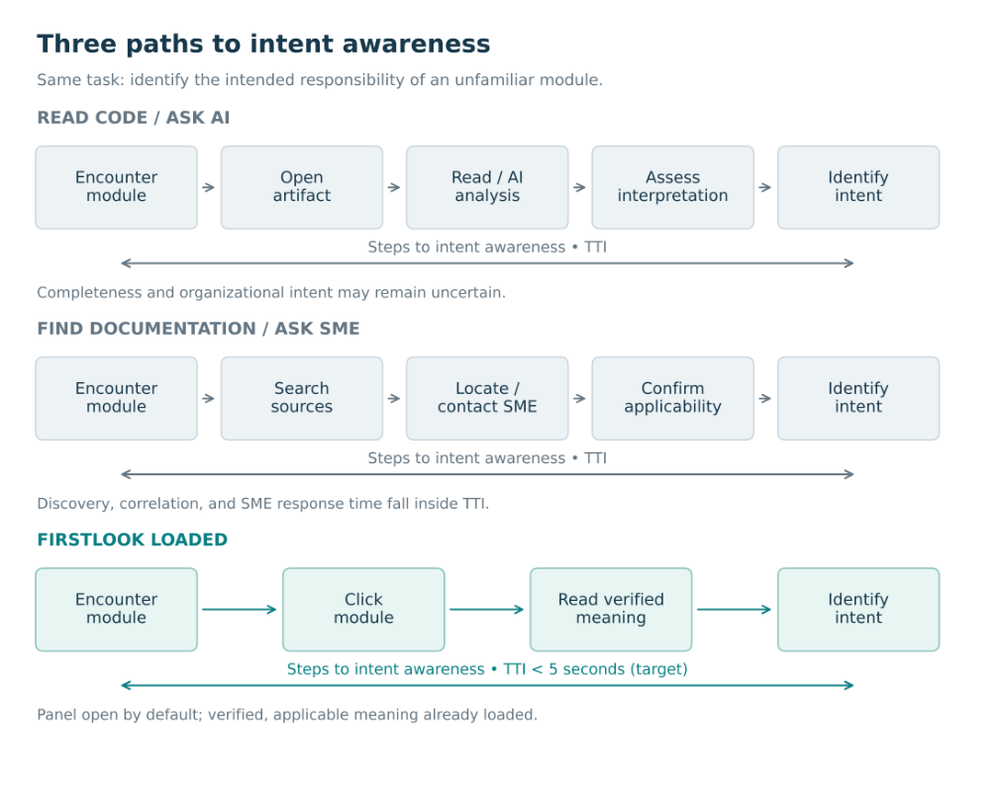

Executive abstract
Software artifacts are easy to encounter and often difficult to place. A filename, search result, or call-graph node can expose an implementation without revealing its intended responsibility. Developers must then assemble an initial interpretation from code, documentation, history, colleagues, or AI analysis. The information may already exist; its absence at the point of interaction makes rediscovery necessary.
This paper defines the intent-awareness gap as the separation between first contact with an artifact and sufficient, credible awareness of its intended role to begin informed exploration. It proposes informed first contact in under 5 seconds as a design objective, supported by a persistent meaning layer that associates artifacts with concise intent records and exposes their verification state.
The proposal extends beyond interface convenience. When code changes, its associated meaning must be evaluated for continued validity, updated when necessary, and governed through the same CI/CD lifecycle. A shared repository can support this process, but storage alone does not establish governance: identity, version alignment, review authority, and release controls are essential.
We propose a persistent meaning layer and use FirstLook to illustrate informed first contact in a development environment. The paper sets out an evaluation framework for the under-5-second target and an enterprise architecture for maintaining meaning through software delivery. Separately, we propose Tokens to Intent as a candidate metric for the model-token consumption required to establish intent, independent of any product or implementation.
This work extends our November 2025 white paper, First Look — A Universal Identity & Context Layer for Artifacts Across Software and Enterprise Knowledge Systems [4]. That paper established first-contact meaning and its governed lifecycle. Here, we define intent awareness, propose Time to Intent as a metric, and specify how code and meaning can remain aligned through CI/CD.
1. The missing moment in code exploration
A developer encounters CSTACUPD in a project explorer. The name suggests something about customers and accounts. It does not establish whether the artifact creates an account, updates a servicing profile, synchronizes a downstream record, or applies a particular business exception. Opening the file supplies more evidence. Searching references adds more. An explanation from an experienced colleague may finally establish the intended responsibility.
The same problem can arise with a descriptive modern filename. PaymentService.java identifies a broad concern, but may not distinguish authorization orchestration from settlement preparation. Naming helps orientation; it does not guarantee it.
This first moment matters because an initial interpretation shapes the next question. A developer who assumes an artifact owns authorization may trace the wrong dependencies. An AI system may produce a technically plausible explanation that misses an organizational constraint. Neither outcome requires poor tooling. Both can begin with an artifact presented without the meaning needed to place it.
Development tools provide powerful access to implementation. The opportunity considered here is more specific: make approved artifact intent available at the moment exploration begins.
The objective is to ensure that exploration begins informed.
2. First contact, intent awareness, and the gap between them
First contact is the first encounter with an artifact within a particular exploration episode. It may occur in an explorer, editor, search result, dependency graph, or agent tool response. It is not limited to a developer’s first day on a project. Experienced developers repeatedly encounter unfamiliar components, and familiar components can acquire new responsibilities.
Intent awareness is sufficient, credible orientation to identify what an artifact is intended to represent, the responsibility it owns, and any essential qualification that affects exploration. It answers an opening question: what am I looking at, and what should guide my next step?
Intent awareness does not establish how every branch executes, whether an implementation is correct, or whether a proposed modification is safe. Those require analysis. Nor should a declared intent be confused with observed behavior. If a component is intended to validate eligibility but currently fails to do so, the disagreement is a finding to investigate, not a reason to rewrite the declaration to match the defect.
The intent-awareness gap is the time and investigative effort between first contact and correct initial orientation. It can involve searching, switching tools, correlating documents, interpreting implementation, or consulting another person. These activities remain valuable for deeper understanding. The avoidable cost arises when they are required merely to recover an already established purpose.
We define Time to Intent as elapsed time from a specified first-contact event to a correct statement of the artifact’s intended role. It includes interaction, retrieval, reading, and any investigation required for that initial orientation. This paper uses TTI (time) for elapsed time and TTI (tokens) for the proposed companion measure introduced below; unqualified TTI in Figure 1 refers to time.
Figure 1 compares illustrative paths to the same orientation task. The FirstLook path assumes that applicable meaning has already been loaded and verified; TTI ends when the reader correctly identifies intent.

3. Why existing knowledge can remain unavailable
The problem is not simply insufficient documentation. A codebase can contain extensive documentation and still leave a developer uncertain at first contact. Knowledge must be discoverable, correctly associated, concise enough for initial orientation, and credible for the version being explored.
Names and comments contribute directly to understanding. Names are compact, however, and can be constrained by conventions, legacy platforms, or historical decisions. Comments may explain a local implementation without stating the larger business responsibility. Both can become outdated.
README files, Markdown, wikis, and architecture records can contain excellent intent information. They become effective first-contact mechanisms when tooling reliably associates the relevant passage with an artifact and surfaces it where needed. Without that association, the developer must know that the information exists, locate it, and establish that it applies. The storage format is not the deciding factor; the interaction and trust model are.
Search, reference navigation, and call graphs expose relationships. Those relationships can help establish purpose, but they do not always express the organization’s approved interpretation. AI analysis can combine
these signals and generate useful explanations. An inferred explanation, however, should remain distinguishable from an approved declaration with a known source and review history.
These mechanisms are complementary. The proposed layer can use documentation and AI output as inputs while providing the association, verification state, and first-contact presentation they may otherwise lack.
AI can infer intent. Established intent should also be available as evidence.
4. Informed first contact in under 5 seconds
Under 5 seconds is our interaction-design target: initial orientation should be a brief part of encountering an artifact rather than a separate investigative task. Success requires correctly identifying intent within the interval, not simply displaying a panel quickly.
The target includes the relevant interaction, retrieval, presentation, and comprehension steps. A tooltip rendered in a fraction of a second does not meet the objective if the user cannot correctly identify the artifact’s role. Conversely, a concise description may support rapid orientation even when the full explanation requires a separate panel.
A first-contact record should therefore offer a small amount of high-value information: a plain-language responsibility, compact domain or type cues where useful, and a visible indication of verification and applicability. An essential warning should be immediately available when omitting it would materially misdirect exploration.
Consider this illustrative presentation:
CSTACUPD — Customer account attribute maintenance Domain: Card servicing | Type: Batch processor Verified for release R42 by the servicing owner
The expanded record could explain which servicing events trigger updates, identify excluded responsibilities, and link to business rules. The initial view should orient; the expanded view should substantiate.
Compact descriptors create a useful editorial discipline, but character limits cannot substitute for clarity. A record that fits the interface yet leaves the user with a wrong interpretation has failed the objective. Highly complex artifacts may require a brief overview and an explicit qualification rather than a forced oversimplification.
For automated consumers, the analogous objective is to provide an applicable intent record before the first reasoning or action step that depends on purpose. Retrieval latency and successful use should be measured separately from human reading time.
5. A persistent meaning layer
The architectural proposal is a persistent layer that associates software artifacts with declared intent and supporting evidence. The association exists independently of an individual chat session and can be maintained without editing the underlying source file. External storage is an option, not a requirement that rules out source-controlled metadata or existing documentation.
The layer performs four essential functions: resolve the artifact, obtain the applicable intent record, expose its governance state, and surface the result through the current interaction channel. It may also support authoring and imports. Creating new meaning is not required when useful meaning already exists elsewhere.
Verification must be explicit. In this paper, verified means that an identified, authorized reviewer has approved a statement for a defined scope and artifact version. It does not mean the statement is infallible. The record should preserve the author, reviewer, evidence, review time, and applicable code version so the approval can be assessed.
AI-generated text should enter as a proposal unless an authorized process approves it. Imported Markdown should retain its provenance and verification state. A personal annotation should remain distinguishable from a shared approved baseline. Unknown, proposed, verified, review-required, superseded, and disputed records should not be rendered as though they have equal authority.
Meaning also evolves. A stable business responsibility may survive many releases, while a change in ownership, constraints, or implementation can require reconsideration. Persistence must preserve the record’s history without implying that its content is timeless.
6. Reference architecture: association before presentation
The architecture separates the meaning system from any one IDE. An interaction adapter provides an artifact reference and code version to an identity resolver. The resolver finds the applicable record in a governed repository. A policy layer determines whether that record is approved, accessible, and current enough to present. The adapter then supplies concise orientation with access to supporting detail.
Artifact identity is central. A basename can be sufficient in a small prototype and ambiguous across repositories containing duplicate names. Enterprise resolution should account for repository, qualified path or logical identity, artifact type, and version. Rename and move handling should preserve continuity without silently transferring meaning to a different component. An ambiguous match should be exposed rather than treated as verified.
A record can contain an artifact identifier, descriptor, domain, type, detailed intent, source references, meaning version, applicable code version, approval state, reviewer, last evaluation, and lineage. Applicability may be established through a commit, release manifest, content digest, or another controlled association. The appropriate mechanism depends on the deployment model.
The repository may be a relational database, a version-controlled metadata store, a graph store, or an enterprise service. SQL is a practical option for shared records and review workflows, but no database automatically supplies approval policy, secure APIs, release alignment, or reliable adapters.
Local caching can support responsive interaction. A cache must preserve version and verification metadata and visibly identify stale or unavailable records. Access policy also matters: permission to read source code does not necessarily authorize access to every business explanation attached to it.
Established integration primitives support this architecture. VS Code provides extension APIs for hover information [1]. W3C PROV models provenance through entities, activities, and agents [2], offering a foundation for recording how meaning was produced and approved.
7. Governance through the same CI/CD lifecycle
Meaning should participate in software change control because code can invalidate it. The governing question for a changed artifact is whether its associated intent remains valid for the candidate version.
Not every code change requires a rewritten description. A defect correction can preserve the intended responsibility. A refactor may preserve the descriptor while changing an architectural constraint. A new business rule may require both. The lifecycle must record the evaluation even when the conclusion is “reviewed; no meaning change required.”
The proposed process is:
- Identify changed artifacts and the existing intent records that may be affected.
- Evaluate impact using the change, stated intent, dependencies, and organizational policy.
- Record continued validity or propose an updated meaning record.
- Obtain the required review and approval for the candidate code version.
- Validate applicability, approval, identity, and required evidence in CI/CD.
- Release the code with a manifest or equivalent association identifying its approved meaning state.
This is the same delivery lifecycle, even when code and meaning use different physical stores. A database- backed record can participate through a versioned proposal, review reference, and immutable release association. An untracked database edit after deployment cannot provide the same assurance.
Pipeline controls can begin with advisory checks and become mandatory for selected artifacts. Existing required status-check mechanisms provide a practical integration point; GitHub documents that required checks must pass before a protected-branch pull request can merge [3]. A proposed meaning-validity check would use that mechanism to enforce the organization’s policy.
Automation can detect changed files and suggest impact. It cannot establish semantic validity merely from a passing build. Dependency changes may also invalidate a record even when the described file is unchanged. Review scope should therefore consider business rules, interfaces, configuration, and upstream or downstream responsibilities where material.
Release and rollback must preserve alignment. Each deployed code version should resolve to its corresponding approved meaning version. If code rolls back, consumers should not continue displaying intent that applies only to the newer release. Changes should activate as a coherent release state or be coordinated through a controlled manifest.
This paper calls a divergence between stored meaning and the applicable artifact meaning drift. Drift can arise through changed code, changed business policy, or an incorrect original interpretation. Reviews, impact triggers, disputes, and periodic reassessment all contribute to managing it.
If code can invalidate meaning, meaning must participate in the software change lifecycle.
8. FirstLook in practice
We developed FirstLook to make persistent artifact meaning available at the point of interaction. In the VS Code extension, developers can attach meaning or connect a project-relative purpose document, encounter descriptors in an explorer view, and inspect associated meaning through hover or selection. With the meaning panel open by default, selecting a module brings its stored purpose into view without editing the source artifact.
The present interaction model supplies access to meaning that has already been authored or connected. Organizations remain responsible for the accuracy and approval of that content. The proposed enterprise extension adds a shared governed repository, version-aware approval, change-impact evaluation, CI/CD validation, and coordinated code-and-meaning releases. These capabilities build on the governance model described in the original paper [4].
An illustrative encounter with CSTACUPD shows the intended difference. Without an associated record, a developer may examine source, search references, and correlate documentation before identifying its responsibility. With a verified, applicable record surfaced alongside the artifact, that responsibility can become the starting point for exploration. The remaining work is to investigate implementation, dependencies, and behavior in light of that orientation.
This mechanism can also connect existing knowledge. A Markdown analysis, SME-authored dataset, or approved architecture record need not be duplicated merely to use the interface. The important requirements are a reliable artifact association, a clear source and approval state, and controlled presentation. The broader architectural model is Meaning Control: managing how artifact meaning is associated, verified, versioned, and made available to consumers.
9. Implications for AI-assisted engineering
An AI system receiving code can construct an interpretation from the evidence available. An AI system receiving code together with an applicable, governed intent record has an additional reference against which to interpret behavior and identify discrepancies.
The record should function as a declared constraint and source of evidence, not as an instruction that overrides analysis. An agent should be able to report that approved intent and observed implementation appear inconsistent. It should also distinguish a verified declaration from an unreviewed suggestion and preserve the identity and version of the record used.
Machine access requires explicit integration. Surfacing meaning in a human-facing IDE view does not automatically make it available to an assistant or agent. A tool interface, API, or context adapter must retrieve the relevant record and include provenance, applicability, and access controls.
We hypothesize that providing applicable intent before analysis can reduce repeated inference, initial misclassification, and inconsistency in explanations. Evaluation should compare total retrieval and reasoning cost, interpretation accuracy, and downstream task quality. Stale or incorrect meaning must be included in testing because it can misdirect an agent despite fast access.
9.1 Tokens to Intent as an independent metric
We propose Tokens to Intent as a candidate metric for evaluating the model-token consumption required to establish artifact intent. Tokens to Intent measures cumulative model tokens consumed by an AI workflow from a defined first encounter with an artifact to correctly identifying its intended responsibility. The metric applies across code analysis, documentation retrieval, agent workflows, and other approaches; it does not depend on FirstLook or on a persistent meaning layer.
Both measures share the same success condition: correct initial orientation. TTI (time) captures elapsed duration; TTI (tokens) captures model-token consumption within a specified workflow boundary. Neither should be interpreted without accuracy. A fast or token-efficient incorrect answer has not reached the
intended endpoint. Token consumption is a measurable resource quantity, not a direct measure of reasoning quality, total compute, or financial cost.
9.2 Toward an intent-awareness measurement ontology
The two metrics could be developed within an intent-awareness measurement ontology: a formal vocabulary linking an artifact, an exploration episode, a first-contact event, an intent statement, supporting evidence, an assessment of correctness, and the resources consumed before that assessment. Such a model would allow an observation to identify what was measured, when measurement began and ended, and which accounting rules were applied.
A candidate ontology should record the artifact and version, the task and expected responsibility, the model or human consumer, the evidence available, the measurement boundary, and the validation outcome. Token observations should additionally identify the model and tokenizer, included token categories, retries, tool- mediated model calls, and cache treatment. These definitions would support comparison across workflows without treating different token-accounting systems as interchangeable.
Tokens to Intent is a working proposal whose terminology, accounting boundaries, and relationship to existing evaluation frameworks require investigation and refinement. Related terms or equivalent measures may already exist. The ontology described here is a development direction rather than a completed standard.
10. Evaluation: measure correct orientation
The central hypothesis is that point-of-interaction, governed intent can reduce TTI while maintaining or improving interpretation accuracy. The under-5-second objective should be tested against that hypothesis, not treated as established by the existence of a tooltip.
A study should compare a conventional IDE, an IDE with accessible documentation, an IDE with an AI assistant, and an interface that surfaces governed intent. Documentation-enabled baselines should be realistically configured; an artificially difficult baseline would overstate the proposed layer’s value.
Participants should encounter unfamiliar artifacts selected across modern and legacy naming patterns, differing complexity, and varying documentation quality. A counterbalanced design should reduce learning effects, with equivalent tasks or separate artifact sets preventing prior exposure from determining the result.
The primary human-facing measure is TTI (time): elapsed time from a specified first-contact event to an accurate statement of intended responsibility. A scoring rubric established before the study should assess essential responsibility and any qualification needed for correct orientation. Confidence should be recorded separately: fast certainty about a wrong role is a failure.
Report median and tail TTI, the proportion of correct responses achieved in less than 5 seconds, overall accuracy, unresolved encounters, and navigation effort. Include lookup and reading time. Do not discard trials with missing, stale, or incorrect meaning simply because they make the interface look less effective.
The experiment should also test resilience: duplicate names, renamed artifacts, conflicting records, stale approvals, unavailable repositories, and implementation that contradicts declared intent. For AI consumers, measure retrieval latency, interpretation accuracy, inappropriate reliance on stale records, token usage, and downstream task quality using controlled model and context settings.
For TTI (tokens), a study should predefine the counted token categories and report them separately before presenting a total. Include model input and output tokens across the relevant calls, including repeated
context, model-visible retrieved material, retries, and model calls used for validation when these fall inside the declared boundary. Tool activity that invokes no model should not be assigned invented tokens. Disclose cached-input accounting and separately reported reasoning tokens, avoid double counting, and state when a token category is unavailable.
Report correct-identification rates alongside both resource measures. Where intent is never correctly identified, report the unsuccessful outcome, time limit, and tokens consumed to termination rather than treating the run as a successful TTI observation. Hold models and tokenizers constant for direct comparisons where possible; when they differ, disclose the difference. Record any earlier meaning-generation or review cost separately so the per-encounter metric is not mistaken for the full lifecycle cost.
There is no numerical target for TTI (tokens) in this paper. Its initial purpose is to make token consumption to correct intent identification observable and comparable under declared conditions. Establishing useful baselines and testing whether the metric predicts meaningful task outcomes are subjects for future evaluation.
Governance has costs of its own. Meaning creation, impact evaluation, review, and maintenance effort should be measured against any reduction in rediscovery. A system that saves exploration time but imposes disproportionate approval work may require a narrower deployment policy.
11. Adoption and practical limits
Adoption can begin with a small set of high-value artifacts: frequently explored components, unfamiliar legacy programs, or modules with important business constraints. Establish a concise schema and responsible reviewers, then surface the records where developers already work.
The next step is shared persistence and version-aware access. CI/CD can initially identify missing evaluations as advisory findings. Mandatory gates can follow where review policy, ownership, and operational readiness justify them. Automated consumers should be introduced with the same access and applicability controls as human interfaces.
Coverage should remain visible. A codebase with only partial records should not imply universal verification. A missing record is a useful signal; an uncertain association displayed as an approved fact is a defect.
The hardest problems concern semantics and authority. Organizations can disagree about responsibilities. A single file can serve several roles. A reviewer can be mistaken. Records may become stale through business change rather than source change. The system needs mechanisms for scope, disputes, corrections, and accountable ownership.
The approach can build on existing documentation, provenance, navigation, and knowledge-management practices. Evaluation should compare these practices as realistically configured alternatives and identify where point-of-interaction meaning contributes additional value.
12. Conclusion
The first encounter with a code artifact is an opportunity to provide direction. When intent already exists but must be rediscovered, exploration begins with avoidable uncertainty. A persistent meaning layer can make that intent available where the artifact is encountered, with the verification and version information needed to assess it.
Informed first contact in under 5 seconds is a concrete design objective. Achieving it requires concise presentation and reliable retrieval, but also correct association, explicit authority, and an evaluation that measures understanding rather than display speed.
Its durability depends on governance. Meaning must be reconsidered when code or its operating context changes, approved when updates are needed, and delivered through the same controlled lifecycle as the code it describes.
The resulting proposition is practical: begin exploration with an applicable declaration of purpose, preserve the freedom to test that declaration against implementation, and maintain both as software evolves.
Time to Intent and the proposed Tokens to Intent measure offer complementary ways to investigate the resources required for initial orientation. Developing their definitions within a shared measurement ontology could make intent-awareness outcomes easier to compare across human and AI workflows.
Intent awareness should be an available starting point for exploration—and a maintained responsibility throughout software delivery.
References
[1] Microsoft. “Programmatic Language Features.” Visual Studio Code Extension API. https://code.visualstudio.com/api/language-extensions/programmatic-language-features. Accessed 6 October 2026.
[2] W3C. “PROV-Overview: An Overview of the PROV Family of Documents.” W3C Working Group Note, 30 April 2013. https://www.w3.org/TR/prov-overview/. Accessed 6 October 2026.
[3] GitHub. “Status checks.” GitHub Docs. https://docs.github.com/en/pull-requests/reference/status-checks. Accessed 6 October 2026.
[4] CultureQuest Studios. First Look — A Universal Identity & Context Layer for Artifacts Across Software and Enterprise Knowledge Systems. November 2025. https://culturequeststudios.com/assets/WhitePapers/FirstLook_WhitePaper.pdf.
Publication note
Scope: This paper presents design objectives and a proposed evaluation framework; it reports no performance-study results. FirstLook’s interaction model is distinguished from the proposed enterprise governance capabilities in Section 8. Under 5 seconds refers to Time to Intent, not complete implementation understanding. Tokens to Intent is an independent candidate metric with no numerical target. The measurement ontology is proposed for further development, with terminology and related-work assessment still open.